Introduction
Solvi Rognvaldsson, Rafael Vias, Birgir Hrafnkelsson and Axel Orn Jansson
Source:vignettes/introduction.Rmd
introduction.RmdA discharge rating curve is a model that describes the relationship between water elevation and discharge in a river. The rating curve is estimated from paired observations of water elevation and discharge and it is used to predict discharge for a given water elevation. This is the main practical usage of rating curves, as water elevation is substantially easier to directly observe than discharge. Four different discharge rating curve models are implemented in this R package using a Bayesian hierarchical model:
plm0() - Power-law model with a constant error variance (hence the 0). This is a Bayesian hierarchical implementation of the most commonly used discharge rating curve model in hydrological practice.
plm() - Power-law model with error variance that varies with water elevation.
gplm0() - Generalized power-law model with a constant error variance (hence the 0). The generalized power law is introduced in Hrafnkelsson et al. (2022).
gplm() - Generalized power-law model with error variance that varies with water elevation. The generalized power law is introduced in Hrafnkelsson et al. (2022).
For further details about the different models, see Hrafnkelsson et al. (2022). The models differ in their complexity, gplm being the most flexible and complex model. We will focus on the use of gplm throughout this introduction vignette and explore the different ways to fit the gplm and visualize its output. However, the API of the functions for the other three models are completely identical so this vignette also helps users to run those models.
We will use a dataset from a stream gauging station in Sweden, called Krokfors, that comes with the package:
> data(krokfors)
> krokfors
#> W Q
#> 1 9.478000 10.8211700
#> 2 8.698000 1.5010000
#> 3 9.009000 3.3190000
#> 4 8.097000 0.1595700
#> 5 9.104000 4.5462500
#> 6 8.133774 0.2121178
#> 7 8.569583 1.1580000
#> 8 9.139151 4.8110000
#> 9 9.464250 10.9960000
#> 10 8.009214 0.0984130
#> 11 8.961843 2.7847910
#> 12 8.316000 0.6631890
#> 13 8.828716 1.8911800
#> 14 9.897000 20.2600000
#> 15 7.896000 0.0190000
#> 16 9.534000 12.1000000
#> 17 9.114000 4.3560000
#> 18 8.389000 0.6200000
#> 19 8.999000 2.6800000
#> 20 9.099000 3.7310000
#> 21 8.502000 0.8930000
#> 22 8.873000 1.9000000
#> 23 8.240000 0.3200000
#> 24 9.219000 5.9000000
#> 25 9.271000 6.9000000
#> 26 8.370000 0.4420000
#> 27 9.431000 9.0000000Fitting a discharge rating curve
It is very simple to fit a discharge rating curve with the bdrc package. All you need are two mandatory input arguments, formula and data. The formula is of the form y~x, where y is the discharge in square meters per second (m\(^3/\)s), and x is the water elevation in meters (m). It is very important that the data is in the correct units! The data argument must be a data.frame including x and y as column names. In our case, the Krokfors data has the discharge and water elevation measurements stored in columns named Q and W, respectively. We are ready to fit a discharge rating curve using the gplm function:
> gplm.fit <- gplm(Q~W,data=krokfors,parallel=TRUE,num_cores=2) # parallel=TRUE by default and by default, the number of cores is detected on the machineThe gplm function returns an object of class “gplm” which we can summarize and visualize using familiar functions such as
> summary(gplm.fit)
#>
#> Formula:
#> Q ~ W
#> Latent parameters:
#> lower-2.5% median-50% upper-97.5%
#> a 1.50 1.94 2.23
#> b 1.83 1.84 1.84
#>
#> Hyperparameters:
#> lower-2.5% median-50% upper-97.5%
#> c 7.71211 7.8102 7.856
#> sigma_beta 0.42368 0.7066 1.288
#> phi_beta 0.57452 1.1910 2.874
#> sigma_eta 0.00329 0.0912 0.534
#> eta_1 -4.93445 -4.2566 -3.557
#> eta_2 -5.94891 -4.0659 -2.280
#> eta_3 -6.87756 -4.2049 -1.611
#> eta_4 -7.71587 -4.4949 -1.223
#> eta_5 -8.24321 -4.6293 -0.680
#> eta_6 -8.78471 -4.6121 -0.250
#>
#> WAIC: 1.112881and
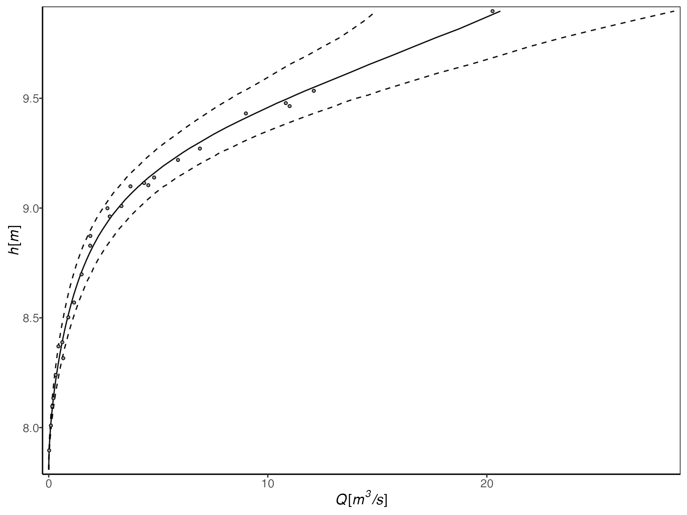
In the next section, we will dive deeper into visualizing the “gplm” object.
Visualizing posterior distributions of different parameters
The bdrc package provides several tools to visualize the results from model objects which can give insight into the physical properties of the river at hand. For instance, the hyperparameter \(c\) corresponds to the water elevation of zero discharge. To visualize the posterior of \(c\), we can write
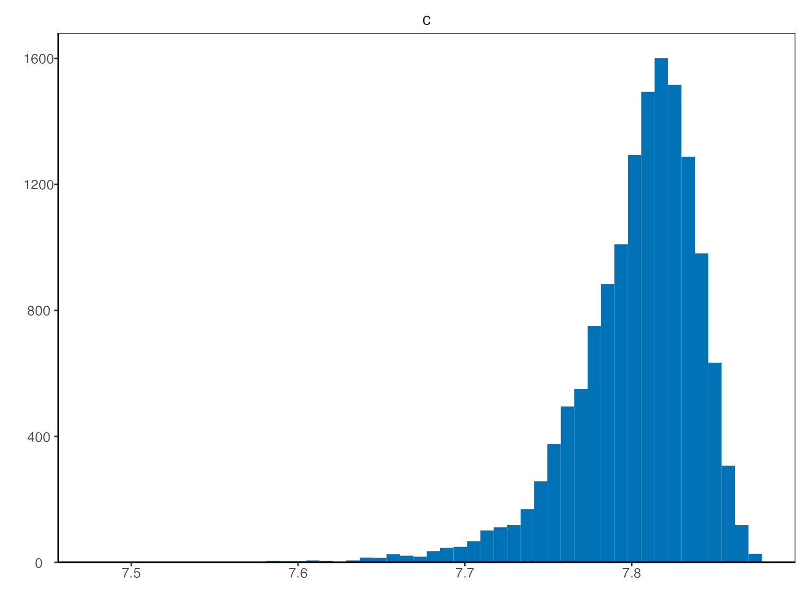
Technically, instead of inferring \(c\) directly, \(h_{min}-c\) is inferred, where \(h_{min}\) is the lowest water elevation value in the data. Since the parameter \(h_{min}-c\) is strictly positive, a transformation \(\zeta=log(h_{min}-c)\) is used for the Bayesian inference so that it has support on the real line. To plot the transformed posterior we write
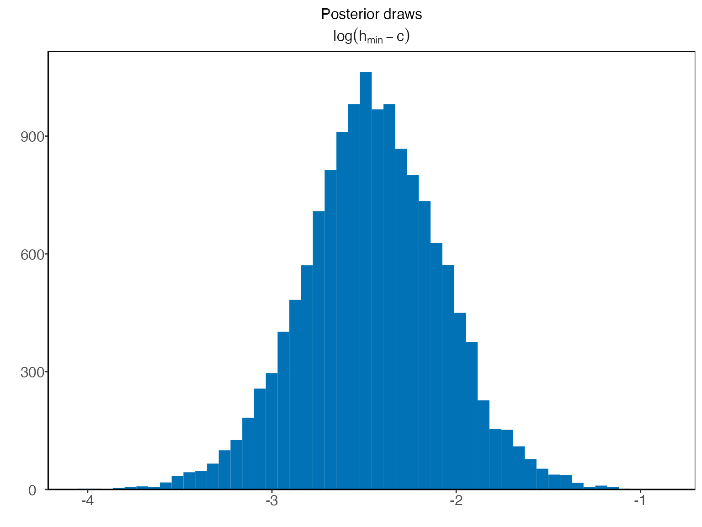
The param argument can also be a vector containing multiple parameter names. For example, to visualize the posterior distributions of the parameters \(a\) and \(c\), we can write
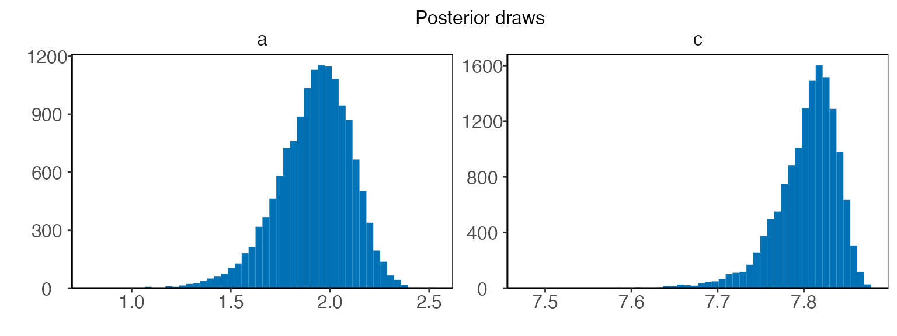
There is a shorthand to visualize the hyperparameters all at once

Similarly, writing ‘latent_parameters’ plots the latent parameters in one plot. To plot the hyperparameters transformed on the same scale as in the Bayesian inference, we write
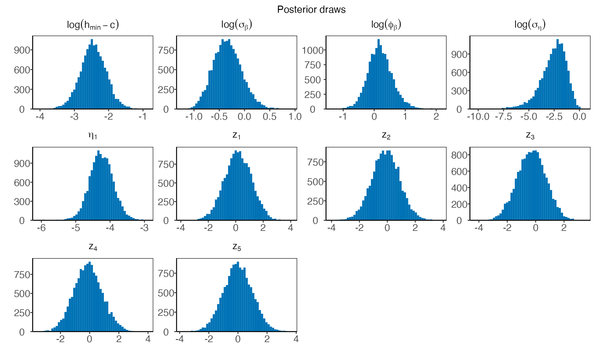
Finally, we can visualize the components of the model that are allowed (depending on the model) to vary with water elevation, that is, the power-law exponent, \(f(h)\), and the standard deviation of the error terms at the response level, \(\sigma_{\varepsilon}(h)\). Both gplm0 and gplm generalize the power-law exponent by modeling it as a sum of a constant term, \(b\), and Gaussian process, \(\beta(h)\), namely \(f(h)=b+\beta(h)\), where \(\beta(h)\) is assumed to be twice differentiable with mean zero. On the other hand, plm and plm0 both model the power-law exponent as a constant by setting \(\beta(h)=0\), which gives \(f(h)=b\). We can plot the inferred power-law exponent with
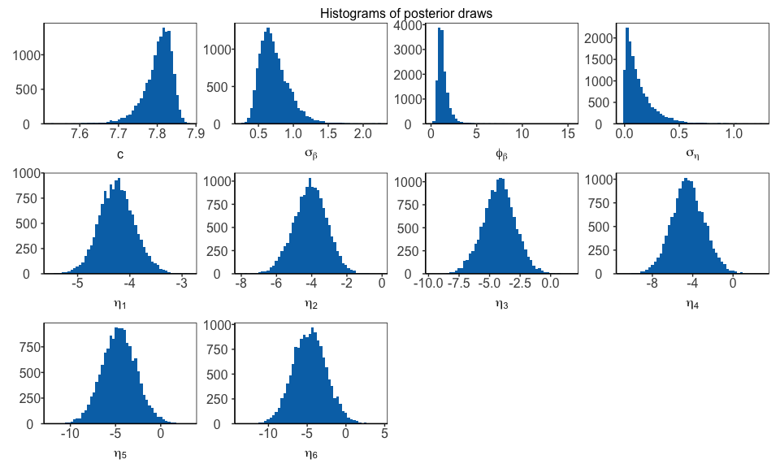
Both plm and gplm model the standard deviation of the error terms at the response level, \(\sigma_{\varepsilon}(h)\), as a function of water elevation, using B-splines basis functions, while plm0 and gplm0 model the standard deviation as a constant. We can plot the inferred standard deviation by writing
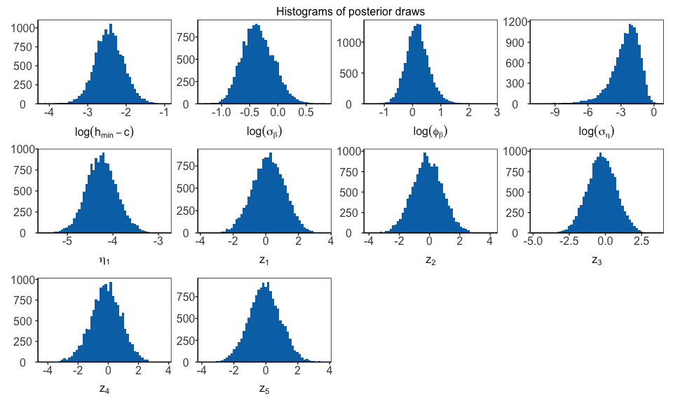
To get a visual summary of your model, the ‘panel’ option in the plot type is useful:
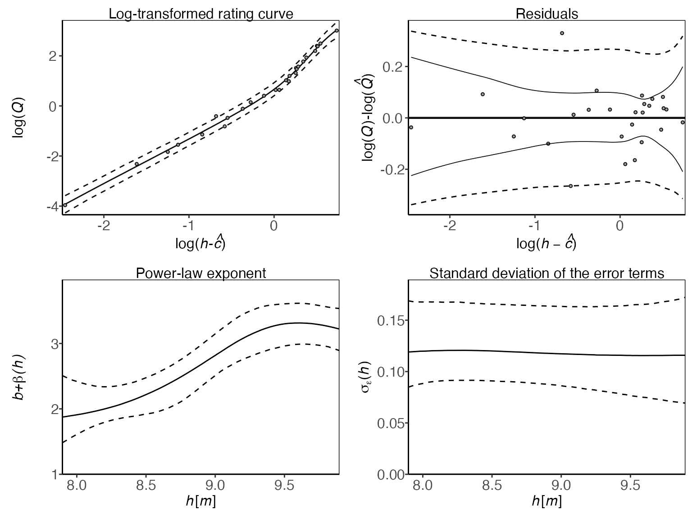
Assessing model fitness and convergence
The package has several functions for convergence diagnostics of a bdrc model, most notably the residual plot, trace plots, autocorrelation plots, and Gelman-Rubin diagnostic plots. The log-residuals can be plotted with
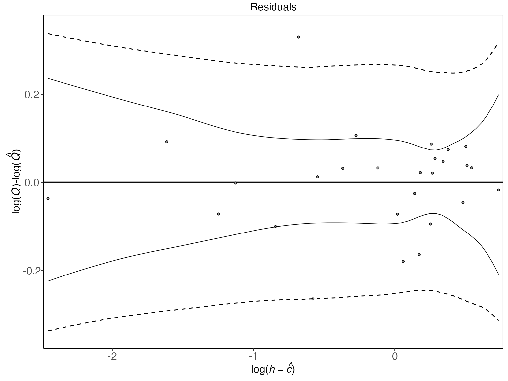
The log-residuals are calculated by subtracting the posterior estimate (median) of the log-discharge, \(log(\hat{Q})\), from the observed log-discharge, \(log(Q)\). Additionally, the plot includes the 95% predictive intervals of log(Q) (- -) and 95% credible intervals for the expected value of log(Q) (—), the latter reflecting the rating curve uncertainty.
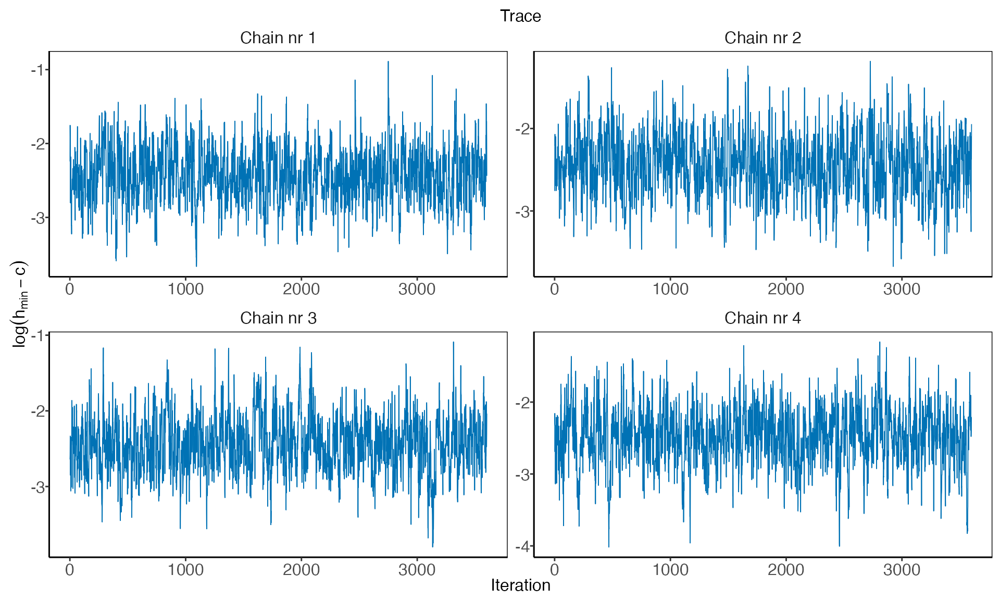
To plot a trace plot for all the transformed hyperparameters, we write
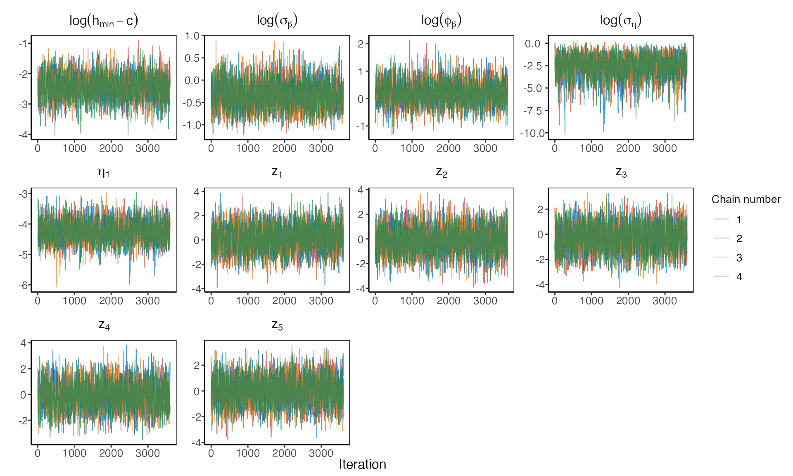
To assess the mixing and convergence of the MCMC chains for each parameter, you can visualize the Gelman-Rubin statistic, \(\hat{R}\), as presented by Gelman and Rubin (1992) with:
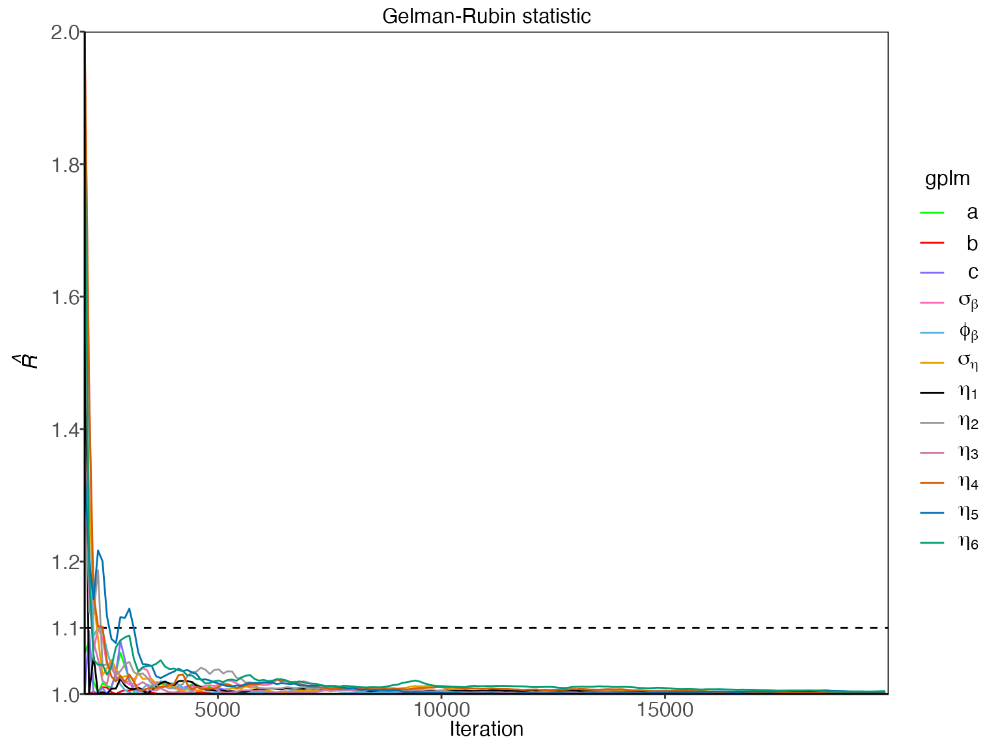
And finally, autocorrelation of parameters can be assessed with
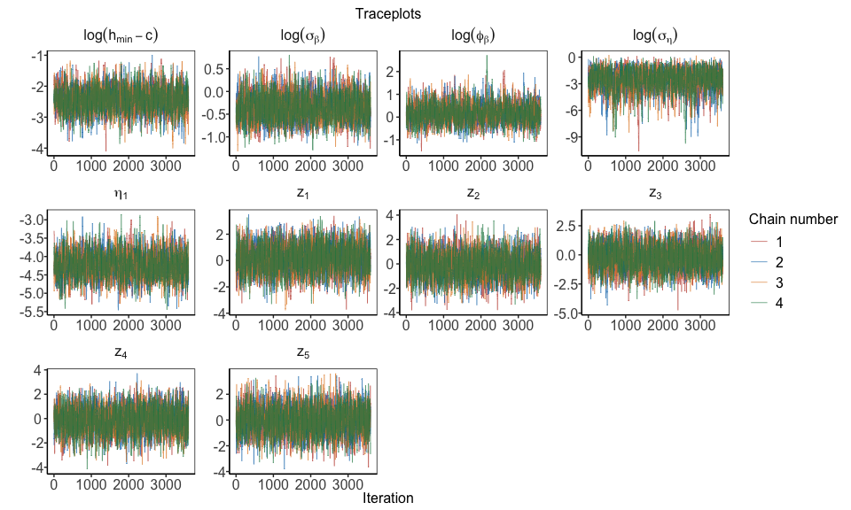
Customization of models
There are ways to further customize the gplm function. In some instances, the parameter of zero discharge, \(c\), is known, and you might want to fix the model parameter to the known value. In addition, you might want to extrapolate the rating curve to higher water elevation values by adjusting the maximum water elevation. Assume 7.65 m is the known value of \(c\) and you want to calculate the rating curve for water elevation values up to 10 m, then your function call would look like this
Prediction for an equally spaced grid of water elevations
To get rating curve predictions for an equally spaced grid of water elevation values, you can use the predict function. Note that only values in the range from \(c\) and h_max are accepted, as that is the range in which the Bayesian inference was performed
> h_grid <- seq(8,9,by=0.01)
> rating_curve_h_grid <- predict(gplm.fit,newdata=h_grid)
> print(rating_curve_h_grid)
#> h lower median upper
#> 1 8.00 0.06163328 0.08270752 0.1111879
#> 2 8.01 0.06739421 0.09041000 0.1208589
#> 3 8.02 0.07364158 0.09877837 0.1318364
#> 4 8.03 0.07988896 0.10714673 0.1428140
#> 5 8.04 0.08629765 0.11567736 0.1540129
#> 6 8.05 0.09360354 0.12511039 0.1664427
#> 7 8.06 0.10090942 0.13454342 0.1788724
#> 8 8.07 0.10839807 0.14413626 0.1913006
#> 9 8.08 0.11651192 0.15427579 0.2037235
#> 10 8.09 0.12462576 0.16441532 0.2161463
#> 11 8.10 0.13278452 0.17485156 0.2291399
#> 12 8.11 0.14104807 0.18598012 0.2434656
#> 13 8.12 0.14931161 0.19710867 0.2577913
#> 14 8.13 0.15757516 0.20823723 0.2721170
#> 15 8.14 0.16685505 0.21993478 0.2872112
#> 16 8.15 0.17675100 0.23197725 0.3027713
#> 17 8.16 0.18664696 0.24401971 0.3183314
#> 18 8.17 0.19637028 0.25680451 0.3356573
#> 19 8.18 0.20608769 0.26961468 0.3530435
#> 20 8.19 0.21611184 0.28271149 0.3706802
#> 21 8.20 0.22681457 0.29644247 0.3888710
#> 22 8.21 0.23751730 0.31017345 0.4070618
#> 23 8.22 0.24860815 0.32450089 0.4254459
#> 24 8.23 0.25990283 0.33914160 0.4439315
#> 25 8.24 0.27119751 0.35378232 0.4624171
#> 26 8.25 0.28204791 0.36935394 0.4811805
#> 27 8.26 0.29289831 0.38492556 0.4999439
#> 28 8.27 0.30486210 0.40061590 0.5198067
#> 29 8.28 0.31809836 0.41644192 0.5409261
#> 30 8.29 0.33133461 0.43226795 0.5620454
#> 31 8.30 0.34452526 0.44936232 0.5827024
#> 32 8.31 0.35771264 0.46654728 0.6033263
#> 33 8.32 0.37116789 0.48374553 0.6256679
#> 34 8.33 0.38502494 0.50096372 0.6505859
#> 35 8.34 0.39922128 0.51928739 0.6736392
#> 36 8.35 0.41364381 0.53834804 0.6954493
#> 37 8.36 0.42890591 0.55728499 0.7204843
#> 38 8.37 0.44437789 0.57619102 0.7463256
#> 39 8.38 0.45642481 0.59522118 0.7760268
#> 40 8.39 0.46890216 0.61437858 0.8051869
#> 41 8.40 0.48525334 0.63468113 0.8294766
#> 42 8.41 0.50160452 0.65498369 0.8537662
#> 43 8.42 0.51808287 0.67564392 0.8790889
#> 44 8.43 0.53489649 0.69724712 0.9071348
#> 45 8.44 0.55171012 0.71885033 0.9351807
#> 46 8.45 0.56895651 0.74084271 0.9640151
#> 47 8.46 0.58673184 0.76331077 0.9938131
#> 48 8.47 0.60450717 0.78577883 1.0236111
#> 49 8.48 0.62369895 0.80992991 1.0547931
#> 50 8.49 0.64374060 0.83509080 1.0868054
#> 51 8.50 0.66378226 0.86025169 1.1188178
#> 52 8.51 0.68209018 0.88510789 1.1515583
#> 53 8.52 0.69996468 0.90988792 1.1844809
#> 54 8.53 0.71968564 0.93542539 1.2188628
#> 55 8.54 0.74093432 0.96158955 1.2544521
#> 56 8.55 0.76228640 0.98806009 1.2896638
#> 57 8.56 0.78388622 1.01526473 1.3239709
#> 58 8.57 0.80551207 1.04251911 1.3584820
#> 59 8.58 0.82773628 1.07091664 1.3976828
#> 60 8.59 0.84996049 1.09931417 1.4368835
#> 61 8.60 0.87218470 1.12771170 1.4760843
#> 62 8.61 0.89516647 1.15877985 1.5165488
#> 63 8.62 0.91830201 1.19039005 1.5572698
#> 64 8.63 0.94143755 1.22200025 1.5979908
#> 65 8.64 0.96706246 1.25492965 1.6386659
#> 66 8.65 0.99420760 1.28866468 1.6793131
#> 67 8.66 1.02135275 1.32239970 1.7199603
#> 68 8.67 1.04911687 1.35645771 1.7664187
#> 69 8.68 1.07777017 1.39097969 1.8212249
#> 70 8.69 1.10642347 1.42550166 1.8760311
#> 71 8.70 1.13526829 1.46117262 1.9285816
#> 72 8.71 1.16487923 1.50143948 1.9721089
#> 73 8.72 1.19449016 1.54170634 2.0156363
#> 74 8.73 1.22410110 1.58197321 2.0591636
#> 75 8.74 1.25664051 1.62383290 2.1128280
#> 76 8.75 1.28939325 1.66580863 2.1672308
#> 77 8.76 1.32214600 1.70778437 2.2216337
#> 78 8.77 1.35675320 1.75209498 2.2803767
#> 79 8.78 1.39229796 1.79758605 2.3413141
#> 80 8.79 1.42784273 1.84307712 2.4022515
#> 81 8.80 1.46451594 1.89029642 2.4647465
#> 82 8.81 1.50290816 1.94014839 2.5296142
#> 83 8.82 1.54130037 1.99000037 2.5944819
#> 84 8.83 1.58065552 2.04043458 2.6603728
#> 85 8.84 1.62654719 2.09482105 2.7332095
#> 86 8.85 1.67243886 2.14920753 2.8060462
#> 87 8.86 1.71833053 2.20359401 2.8788829
#> 88 8.87 1.76422220 2.25798048 2.9517196
#> 89 8.88 1.81075168 2.31809106 3.0243237
#> 90 8.89 1.85755450 2.38065483 3.0968282
#> 91 8.90 1.90435733 2.44321859 3.1693327
#> 92 8.91 1.95566381 2.50867695 3.2568810
#> 93 8.92 2.00856448 2.57515993 3.3497544
#> 94 8.93 2.06146515 2.64164290 3.4426279
#> 95 8.94 2.11425558 2.70934440 3.5282224
#> 96 8.95 2.16701440 2.77739534 3.6117295
#> 97 8.96 2.21977321 2.84544629 3.6952365
#> 98 8.97 2.28284634 2.92415353 3.7931915
#> 99 8.98 2.34824989 3.00526847 3.8944107
#> 100 8.99 2.41365344 3.08638341 3.9956300
#> 101 9.00 2.47883686 3.16815388 4.0978049References
Gelman, A., & Rubin, D. B. (1992). Inference from iterative simulation using multiple sequences, Statistical Science, 7(4), 457–472.
Hrafnkelsson, B., Sigurdarson, H., and Gardarsson, S. M. (2022). Generalization of the power-law rating curve using hydrodynamic theory and Bayesian hierarchical modeling, Environmetrics, 33(2):e2711.